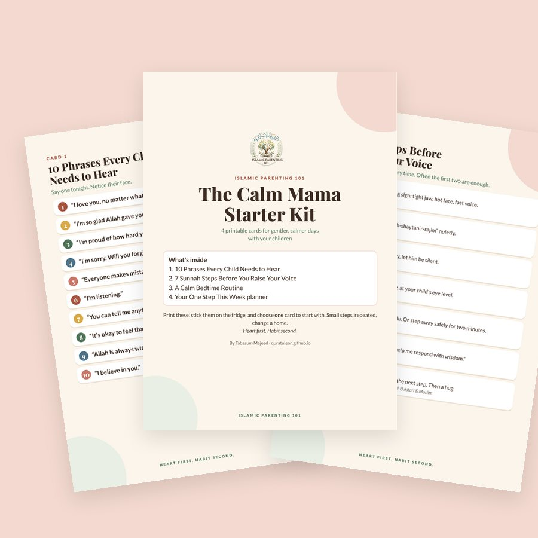

Raise children who love Allah — from the heart.
Gentle, practical Islamic parenting from the Quran and Sunnah. Less yelling, more connection, and good habits that grow from a loving heart.
✓ Quran & hadith with sources✓ Real scripts for hard moments✓ Free printables
Four gentle guides to begin with
Each guide is a complete, step-by-step starting point. Pick the one closest to what your home needs right now.


The Calm Mama Starter Kit
4 printable cards for gentler, calmer days: phrases every child needs to hear, 7 Sunnah steps before you raise your voice, a calm bedtime routine with du'as, and a simple weekly planner.

Latest posts

Daily Duas for Kids: 12 Easy Duas Every Muslim Child Can Learn
Daily duas for kids — 12 short, authentic supplications for eating, sleeping, leaving home and more, with meanings and simple ways to teach them.
Gentle Parenting in Islam: The Complete Guide for Muslim Moms
Gentle parenting in Islam explained — what the Quran and Sunnah teach about mercy, boundaries and discipline, with real scripts for everyday moments.

How to Get Kids Up for Fajr Without a Fight
How to get kids up for Fajr gently — sleep tips, a calm wake-up routine, the Sunnah's example and scripts by age, so mornings stop being a battle.

How to Discipline a Child in Islam: Gentle, Firm and Fair
How to discipline a child in Islam without hitting or shaming — the Prophet's example, clear boundaries, fair consequences and scripts by age for Muslim moms.
Islamic Parenting: The Complete Guide for Muslim Moms
Islamic parenting explained simply — the Quran and Sunnah foundations, daily habits, discipline, faith and character, with real scripts for Muslim moms.

Muslim Mom Burnout: 9 Gentle Ways to Rest and Recover
Muslim mom burnout is real. Learn the signs, what Islam says about rest and limits, and 9 gentle, practical ways to recover without guilt.
Find help by topic
The 4 C's of heart-first parenting
Build the bond first. Without it, every piece of advice feels like criticism.
Children copy what they see. You are their most beautiful example.
Introduce Allah with love, as a warm and present reality, not a threat.
Only then, discipline that nurtures (tarbiyah) and never humiliates.
Planners & books

19 pages to plan a calm, joyful Ramadan: good-deeds calendar, fasting and salah trackers, du'as and kids' activities.
See inside →
The complete guide to the 4 C's, with scripts for hard moments, du'as for your children and a 30-day plan.
About the book →I'm Tabasum, and I'm so glad you're here.
I write for Muslim mothers who love their children deeply and want to raise them close to Allah, without the yelling, guilt and power struggles. Everything here is rooted in the Quran and the example of the Prophet ﷺ, and written to be used tonight, not someday.
Daily ideas on Pinterest
Save gentle reminders, du'as and printables for your family.
Follow on Pinterest